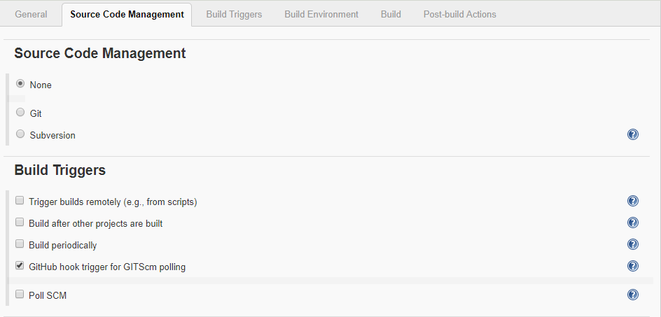
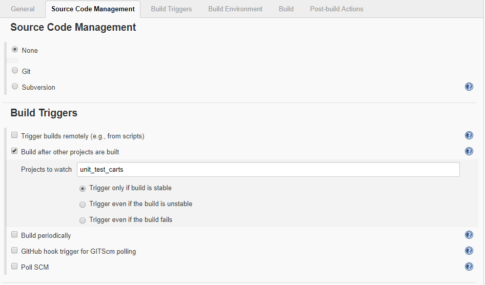
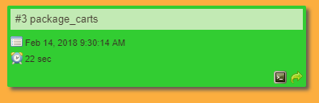
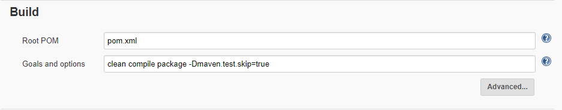
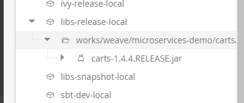

Build Pipeline for Cart
Pipeline for the Cart contains three jobs
- Unit Testing.
- Component Testing
- Packages

Job 1 (Unit testing)
Jenkins provides an out of box functionality for Junit, and provides a host of plugins for unit testing for other technologies. Unit tests verify that a small block of code behaves as expected under a well-defined set of external conditions. Unit tests aim to isolate the code under test. Once the Unit testing is successful it goes to next job called Component testing

General
The source Code of this project will be available on the github.com.
Project url:
https://github.com/udbc/carts.git/

Source Code Management
To get the information related source code management click on the unit_test_carts and the click on configure
In Source Code Management we select the option NONE.
In BUILD TRIGGERS we select the option GitHub hook trigger for GITScm polling . This option states that whatever is triggered or pushed to the master i.e. github.com will immediately known by the jenkins server .

Build Enviornment
Once the Jenkins server gets triggered it starts building the environment. It deletes the workspace before building the environment.

Build
In this we are actually cloning are project and running the unit test module.

Job 2 (Component Testing)
Integration tests exercise the interactions between different components of a system. Once the component test is passed successfully it move to Packages

Source Code Management
To get the information related source code management click on the component_test_carts and the click on configure
In Source Code Management we select the option NONE.
In BUILD TRIGGERS we select the option Build after other projects are built . This option states that once the unit_test_cart is successfully done then only it can start the component testing.

Build Enviornment
Once the Jenkins server gets triggered it starts building the environment.

Build
In this we are actually cloning are project and running the component test module.

Post-build Action
If the unit test and component test is successfully done then only it is triggered to the package build.

Job 3 (Packages)
Once the Component test is passed it goes into the packages stage. The aim of packages is to depoly it to Artifactory.

Source Code Management
To get the information related source code management click on the package_carts and the click on configure
In Source Code Management we select the option Git. It states the are repository is present on github.com
Repository url:-
https://github.com/udbc/carts.git

In BUILD TRIGGERS we select the option GitHub hook trigger for GITScm polling. This option states that whatever is triggered or pushed to the master i.e. github.com will immediately known by the jenkins server .

Build
TO build it successfully we have a file called pom.xml in which the source is present. The main goal is to clean the compine package and to skip the testing part.

Post-build Actions
This is the section where everything build earlier i.e. unit_test_cart and component_test_carts artifacts are deployed to the Artifactory. Here we need to define the target release and target snapshot needed for the Artifactory.

ARTIFACTORY :-
This is where you will be able to see that the cart module have been deployed to the Artifactory.
